양산 어곡 상가 화장실 정기청소
상가 화장실은 이용 빈도가 높아 눈에 보이는 변기 상태뿐 아니라 바닥 줄눈, 변기 하부, 소변기 주변, 세면대 배수부처럼 오염이 반복되는 부분을 꾸준히 관리해야 합니다. 이번 현장은 양산 어곡 상가 화장실을 정기적으로 관리한 실제 작업사례입니다.
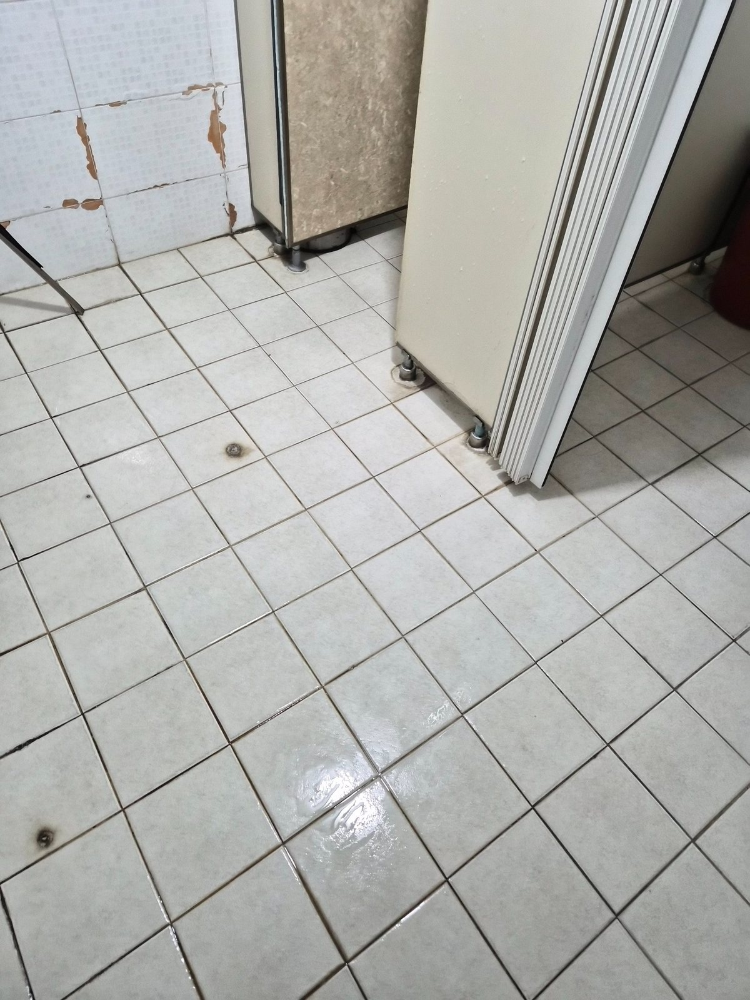
양변기와 변좌, 소변기, 세면대, 바닥 타일과 줄눈, 칸막이 하부와 모서리, 배수구 주변 등 상가 공용화장실에서 반복적으로 오염되는 구간을 중심으로 관리했습니다. 사진은 작업 직후 촬영한 장면이 포함되어 있어 일부 바닥에는 마무리 수분이 보일 수 있습니다.
상가 화장실은 사용량에 따라 오염 속도가 달라집니다
양산 어곡처럼 공장과 상가가 함께 있는 지역의 화장실은 직원과 방문객 사용이 겹치는 경우가 많습니다. 하루 사용량이 많으면 양변기와 소변기 주변의 물때, 바닥의 발자국과 습기, 타일 줄눈 오염이 빠르게 쌓입니다.
양산 어곡 상가 화장실 정기청소에서는 한 번 강하게 닦는 것보다 오염이 굳기 전에 주기적으로 관리하는 방식이 중요합니다. 특히 오래된 타일과 실리콘, 도기 하부는 재질의 변색이나 손상이 오염처럼 보일 수 있기 때문에 청소 가능한 오염과 기존 자재 상태를 구분해서 관리합니다.
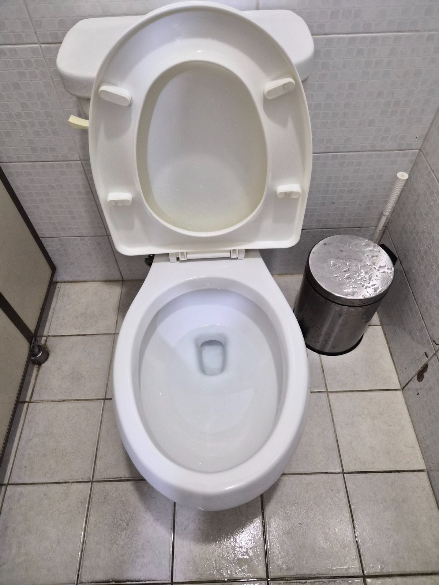
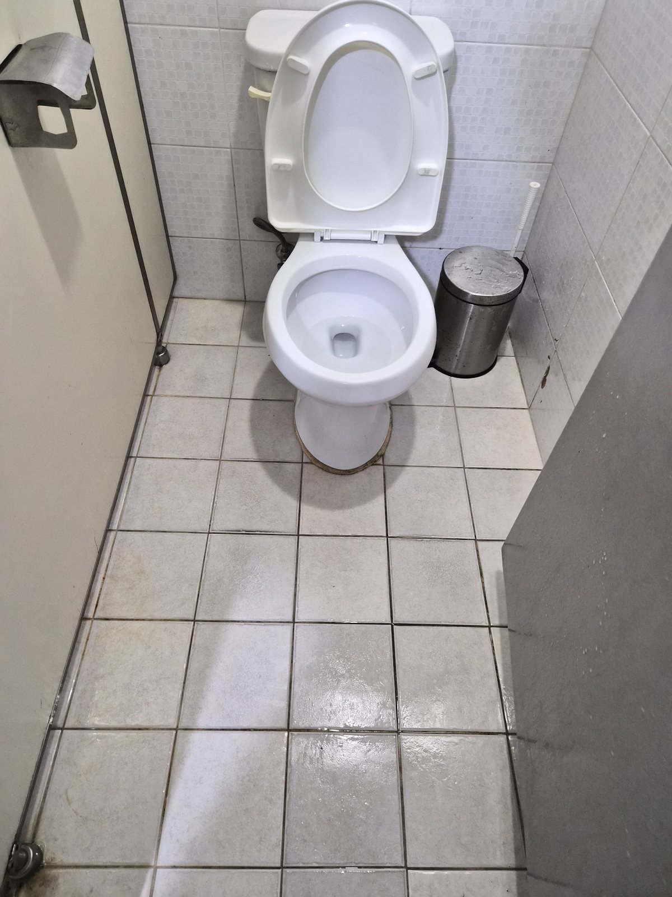
양변기 주변은 변좌만 깨끗하게 보인다고 끝나는 구간이 아닙니다. 변기 하부와 벽면 접점, 칸막이 다리 주변, 모서리 타일은 물기와 먼지가 함께 남기 쉽습니다. 도기 표면을 정리한 뒤 바닥까지 이어서 관리해 이용자가 들어왔을 때 전체 공간이 정돈되어 보이도록 마무리했습니다.
양변기 하부와 바닥 줄눈까지 함께 관리
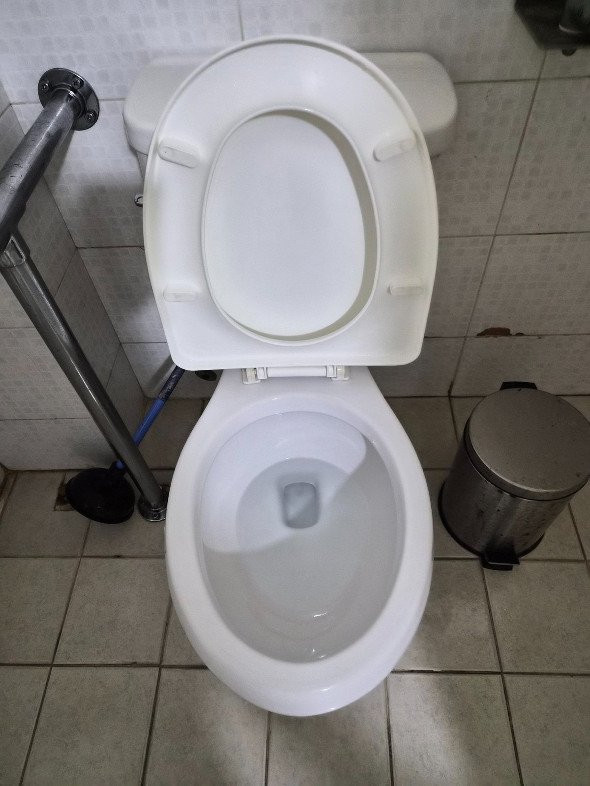
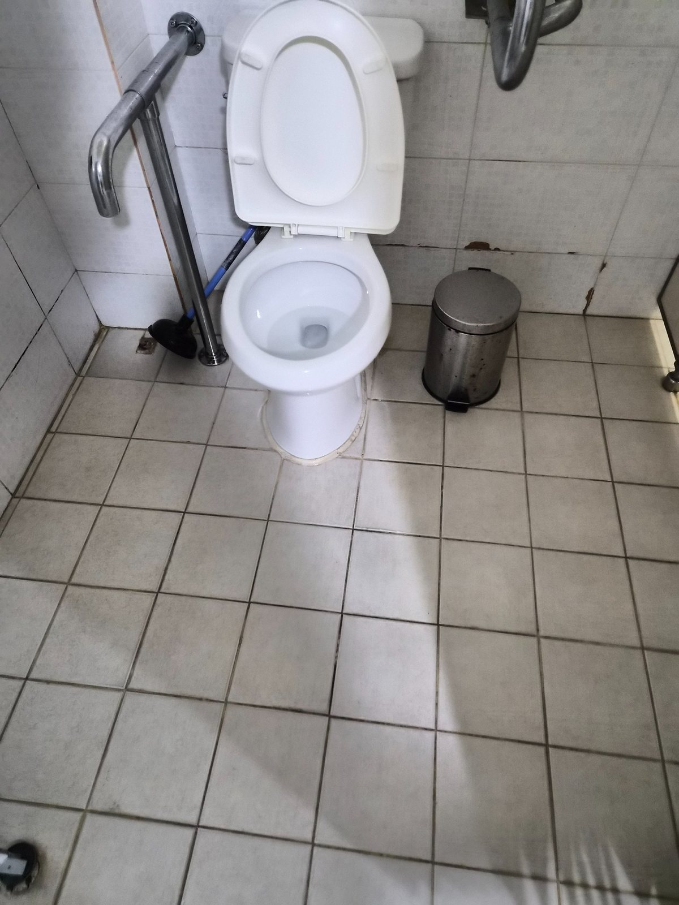
변기 하부는 바닥과 맞닿는 부분에 오염이 고착되기 쉬운 곳입니다. 정기관리에서는 도기 내부, 변좌, 외부 표면을 순서대로 정리하고 하부 주변 타일의 얼룩과 잔여 오염을 함께 확인합니다. 손잡이나 칸막이처럼 손이 자주 닿는 부분도 화장실 전체 청결감을 좌우하기 때문에 빠뜨리지 않고 점검하는 것이 좋습니다.
사진에서 보이는 벽 타일 일부는 오래된 표면 손상이 남아 있습니다. 이런 자재 손상은 청소로 복원되는 부분과는 다르므로 현장에서는 무리하게 마찰하지 않고 오염 제거 위주로 관리합니다.
소변기 주변은 냄새 관리와 연결되는 구간입니다
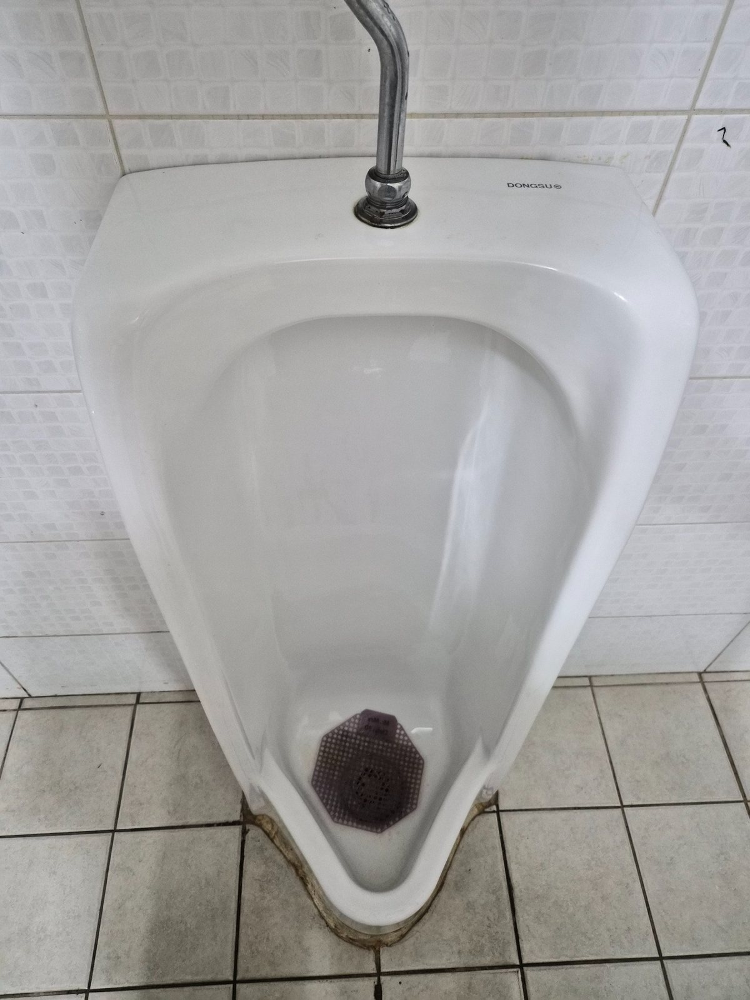
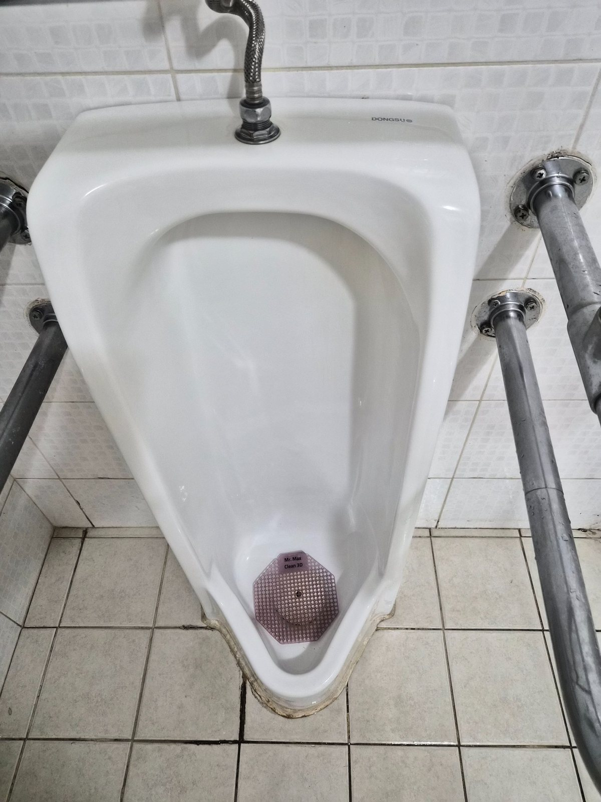
소변기는 도기 안쪽만 닦는 것보다 하부와 바닥 접점, 배수부 주변 상태를 함께 보는 것이 중요합니다. 사용 과정에서 튄 오염이 바닥과 줄눈에 남으면 냄새가 반복될 수 있기 때문입니다. 도기 표면을 정리하고 주변 바닥을 함께 세척해 다음 관리 때까지 오염이 빠르게 누적되지 않도록 관리했습니다.
세면대는 물자국과 배수구 주변을 세밀하게 확인
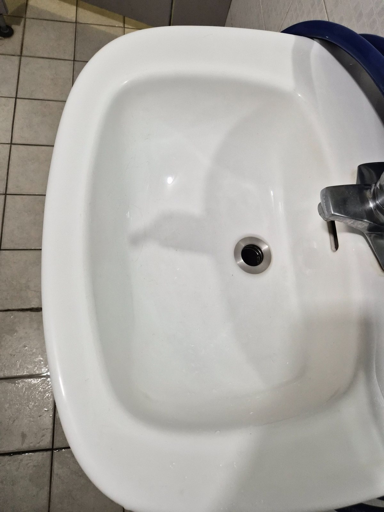
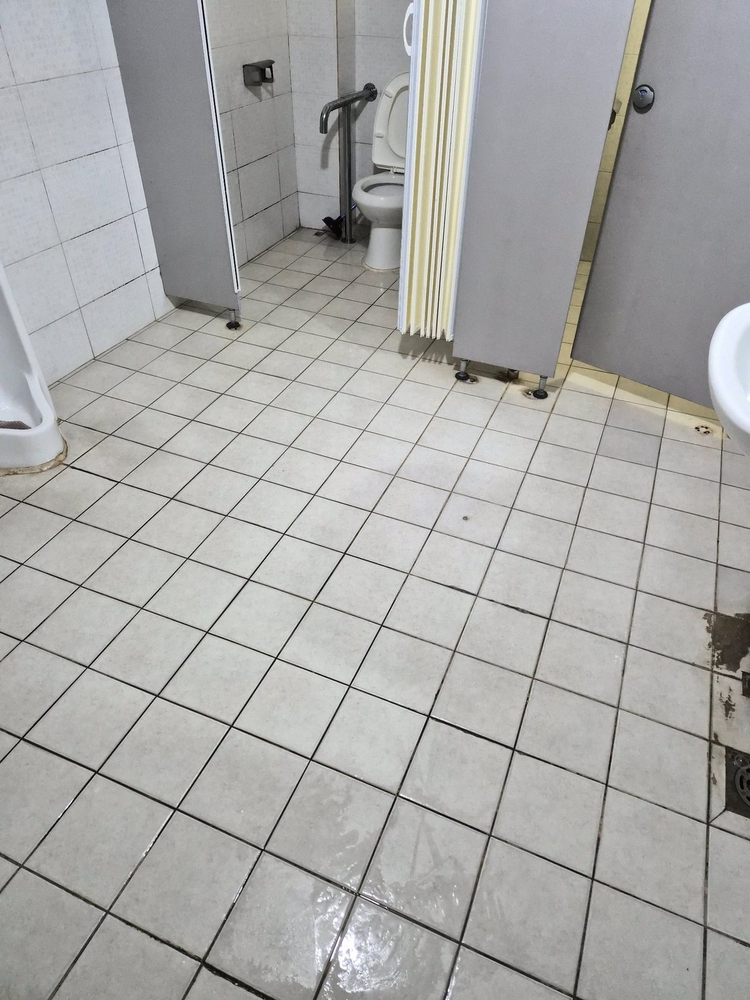
세면대는 물이 반복해서 닿는 공간이라 수전 주변과 배수구 테두리에 물때가 남기 쉽습니다. 도기 표면을 정리할 때는 눈에 잘 보이는 안쪽뿐 아니라 테두리와 수전 하부까지 함께 닦아야 전체가 깔끔하게 보입니다. 사용 후 다시 물이 튀는 공간인 만큼 정기적인 닦기와 건조 관리가 특히 중요합니다.
바닥 타일과 칸막이 하부는 화장실 인상을 좌우합니다
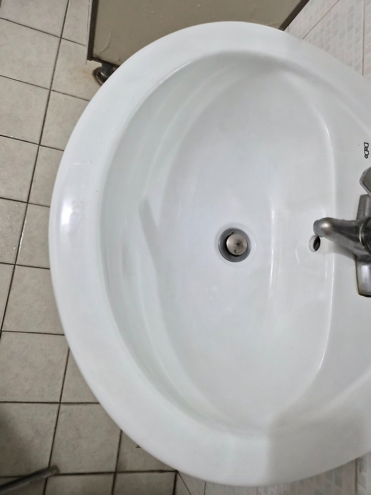
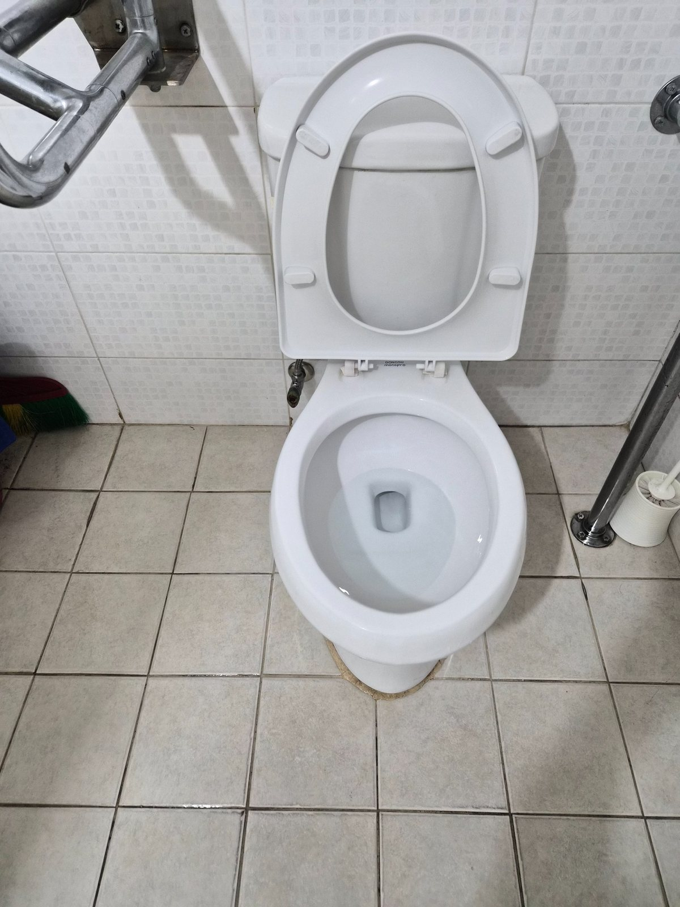
화장실 바닥은 발자국과 습기, 세정제 잔여물이 한꺼번에 남기 쉬워 주기적인 관리가 필요합니다. 특히 칸막이 다리 주변과 모서리는 도구가 닿기 어려워 오염이 누적되기 쉽습니다. 넓은 면은 전체적으로 정리하고 가장자리와 배수부 주변은 별도로 확인해 청소 편차를 줄였습니다.
정기청소는 한 번의 대청소와 관리 목적이 다릅니다
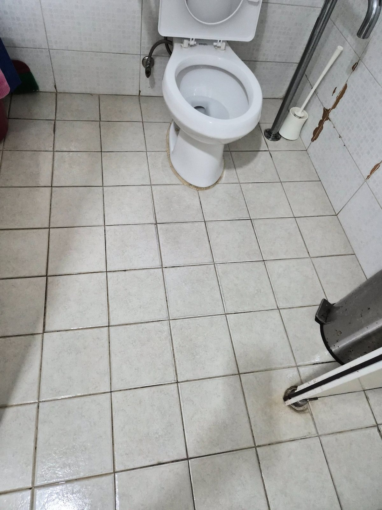
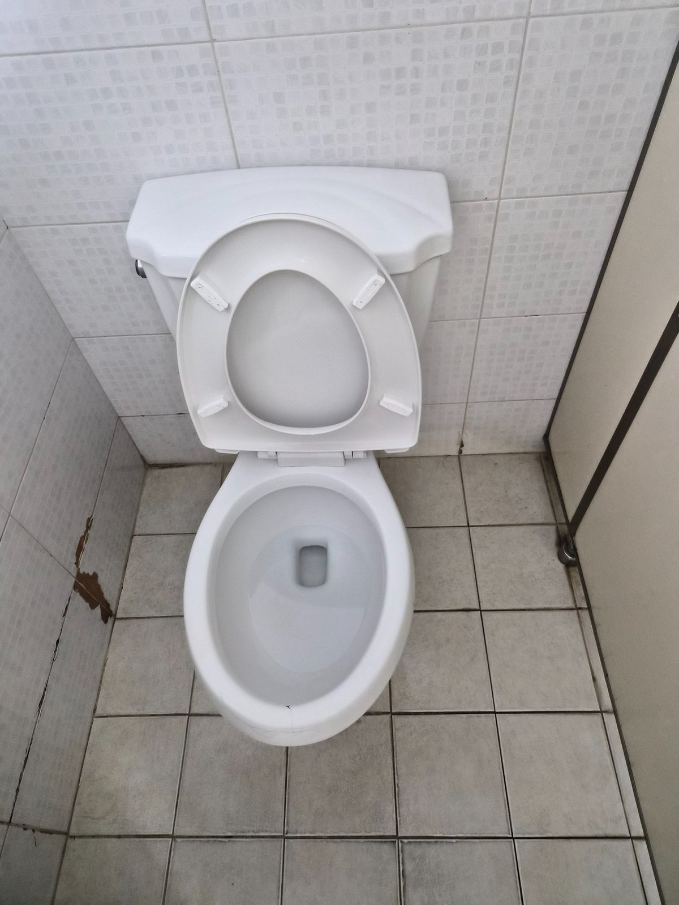
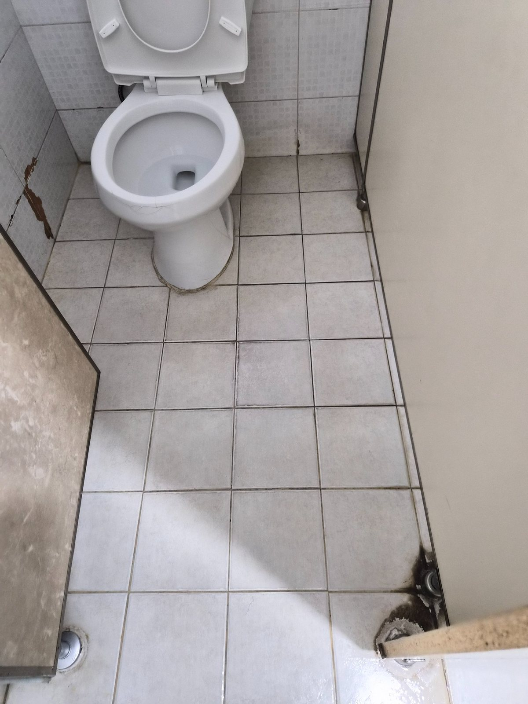
대청소가 묵은 오염을 한 번에 집중해서 정리하는 작업이라면 정기청소는 오염이 심해지기 전에 일정한 상태를 유지하는 관리에 가깝습니다. 사업장 규모, 직원 수, 방문객 수, 화장실 이용량, 운영시간과 바닥 오염 정도를 함께 보고 주 1회부터 주 6회까지 현장에 맞춰 관리 주기를 상담할 수 있습니다.
상가 화장실은 사용량이 많을수록 바닥과 도기 주변의 오염 속도가 빨라집니다. 이용자가 많은 현장은 청소 횟수를 무조건 줄이기보다 필요한 구간과 빈도를 나눠 관리하는 편이 상태 유지에 유리합니다.
양산 어곡 상가 화장실 정기청소 상담
양산 어곡 상가 화장실 정기청소는 화장실 크기만으로 횟수를 정하지 않습니다. 상가 운영시간과 이용 인원, 남녀 화장실 구성, 바닥 재질, 관리 범위를 현장에서 확인한 뒤 필요한 범위에 맞춰 안내합니다.
퍼펙트케어는 양산 지역 상가, 사무실, 공장, 학원, 병원과 사업장 화장실을 현장 상황에 맞춰 관리합니다. 대량건도 문제없습니다.